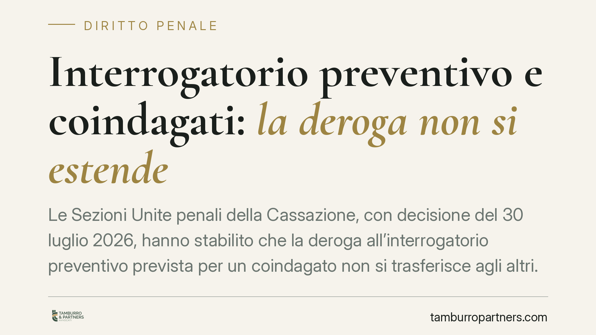

Interrogatorio preventivo e coindagati: la deroga non si estende
Le Sezioni Unite penali della Cassazione, con decisione del 30 luglio 2026, hanno stabilito che la deroga all'interrogatorio preventivo prevista per un coindagato non si trasferisce agli altri. Il diritto a essere ascoltati prima della misura cautelare resta individuale. L'ordinanza che aveva omesso l'interrogatorio obbligatorio è stata annullata. Un principio che incide sulle strategie difensive nei procedimenti con più indagati.

Il caso
Due fratelli erano indagati nello stesso procedimento. Il Gip di Ascoli Piceno aveva applicato una misura cautelare senza svolgere l'interrogatorio preventivo nei confronti di uno di loro, ritenendo che la deroga a quell'adempimento, riconosciuta per un coindagato, valesse per l'intera posizione processuale.
Le Sezioni Unite hanno smentito questa lettura. La deroga non ha effetto espansivo: opera solo rispetto alla singola posizione per la quale ricorrono i presupposti. Per gli altri coindagati l'interrogatorio preventivo resta obbligatorio, salvo che sussistano, per ciascuno di essi, le specifiche condizioni che ne consentono l'omissione.
Inquadramento normativo
Il riferimento è l'art. 291, comma 1-quater, del codice di procedura penale. La norma introduce, come regola, l'interrogatorio dell'indagato prima dell'applicazione di una misura cautelare personale. È il cosiddetto "interrogatorio preventivo" o "di garanzia anticipata": consente all'indagato di esporre le proprie ragioni al giudice prima che la restrizione venga disposta.
La stessa disposizione prevede però eccezioni. L'interrogatorio può essere omesso, ad esempio, quando sussiste il pericolo concreto e attuale di fuga, il rischio di inquinamento della prova o quando la misura si fonda su determinate esigenze cautelari qualificate. In questi casi la finalità è evitare che l'anticipazione dell'atto vanifichi la misura stessa.
Il punto chiarito dalle Sezioni Unite riguarda l'ambito soggettivo di questa deroga. Trattandosi di eccezione a un diritto individuale di difesa, essa va valutata posizione per posizione. Non esiste una "deroga di gruppo": il fatto che per un coindagato ricorra il pericolo di fuga non autorizza a comprimere il diritto degli altri, la cui situazione può essere del tutto diversa.
Implicazioni pratiche
La decisione ha ricadute concrete nei procedimenti con pluralità di indagati, frequenti in materia associativa, di reati economici e di criminalità organizzata.
Per chi si trova coinvolto in un'indagine collettiva, il principio significa che il proprio diritto a essere ascoltato prima della misura non può essere sacrificato per ragioni che riguardano un altro soggetto. Ogni omissione dell'interrogatorio deve essere motivata con riferimento alla singola posizione.
Sul piano processuale, l'omissione ingiustificata dell'interrogatorio preventivo si traduce in un vizio dell'ordinanza cautelare. Come nel caso deciso, ciò può condurre all'annullamento della misura. È un profilo che va verificato con attenzione ogni volta che la restrizione è stata applicata senza previa audizione.
Per la difesa, questo apre uno spazio di controllo effettivo: verificare se il giudice abbia realmente esaminato la posizione individuale o se abbia esteso in modo automatico una valutazione compiuta per un coindagato.
Un limite necessario
La pronuncia si muove nel solco della tutela del contraddittorio anticipato introdotto dalle recenti riforme. Il legislatore ha voluto rafforzare la partecipazione dell'indagato alla fase che precede la misura. Un'interpretazione estensiva della deroga avrebbe svuotato quella garanzia proprio nei procedimenti più complessi, dove la posizione di ciascun soggetto merita un vaglio autonomo.
Le Sezioni Unite hanno ricordato che le eccezioni ai diritti di difesa sono di stretta interpretazione. Non possono essere applicate per analogia né estese oltre i casi espressamente previsti.
Cosa fare in concreto
- Verificate se l'interrogatorio preventivo è stato svolto per la vostra specifica posizione, non per quella di eventuali coindagati.
- Controllate la motivazione dell'ordinanza cautelare: la deroga deve essere giustificata individualmente, con riferimento a pericoli concreti e attuali.
- Segnalate tempestivamente l'omissione in sede di riesame, perché costituisce vizio potenzialmente idoneo all'annullamento della misura.
- Distinguete le posizioni nei procedimenti con più indagati: consigliamo di non presumere che una valutazione compiuta per un altro soggetto valga anche per voi.
- Rivolgetevi a un difensore prima di ogni interlocuzione con l'autorità, per impostare l'eventuale interrogatorio in modo coerente con la strategia difensiva.
Contributo informativo a cura di Tamburro & Partners - Avv. Giuseppe Tamburro. Non costituisce parere legale.
Ogni condominio ha una storia a sé.
Se gestisci un'amministrazione e vuoi un confronto su una specifica questione condominiale, scrivi allo studio. Ti rispondiamo entro un giorno lavorativo.